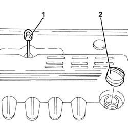
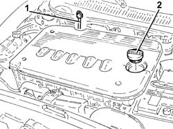

0010T10 engine oil check level and top up
- Path
- Procedures > 00 MAINTENANCE > 0010 NEW UNITS AND PLANNED MAINTENANCE'. > 0010T vehicle oil and fluids > 0010T10 engine oil check level and top up
- Kind
- repair procedure (removal / refitting; the operation number is the code)
- Applies to
- engines: 2.0 JTS, 1.9 JTD 16v, 2.0 JTS, 2.4 JTD 20v; all production periods
- Interactive page
- https://sloeber94.github.io/elrnDB-a156/en/#/3237405
Applies to: engines: 2.0 JTS, 2.0 JTS; all production periods
Proceed with 1084A10 ENGINE OIL - Check level and top up, if necessary .
Applies to: all engines; all production periods
Applies to: engines: 1.9 JTD 16v; all production periods
1. Remove the engine oil dipstick, clean and then fully reinsert. Remove and check the level is between the MIN and MAX limits.
2. If the oil level is close to or even below the MIN level, add the recommended oil through the oil filler opening up to the MAX mark.
 | Type | Component | Name | Qty. |
|---|---|---|---|---|
- | Oli [l] | ENGINE LUBRICATION CIRCUIT | SELENIA TURBODIESEL | 4.2 |
For optimum operation of the engine in particularly harsh climatic conditions (temperatures below -15 degrees C), use the recommended oil for the engine lubrication circuit.
| Type | Component | Name | Qty. |
|---|---|---|---|---|
- | Oli [l] | ENGINE LUBRICATION CIRCUIT | SELENIA WR DIESEL | 4.2 |

Applies to: all engines; all production periods
Applies to: engines: 2.4 JTD 20v; all production periods
1. Remove the engine oil dipstick, clean and then fully reinsert. Remove and check the level is between the MIN and MAX limits.
2. If the oil level is close to or even below the MIN level, add the recommended oil through the oil filler opening up to the MAX mark.
| Type | Component | Name | Qty. |
|---|---|---|---|---|
- | Oli [l] | ENGINE LUBRICATION CIRCUIT | SELENIA TURBODIESEL | 5 |
For optimum operation of the engine in particularly harsh climatic conditions (temperatures below -15 degrees C), use the recommended oil for the engine lubrication circuit.
| Type | Component | Name | Qty. |
|---|---|---|---|---|
- | Oli [l] | ENGINE LUBRICATION CIRCUIT | SELENIA WR DIESEL | 5 |
